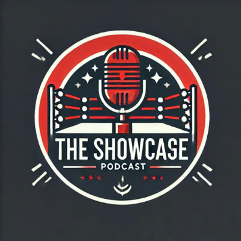
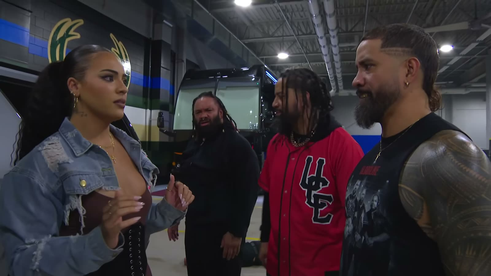

Tony Wrestling
Ciao, sono Tony. Racconto il wrestling in italiano: le notizie, le storie dietro i personaggi, gli eventi visti da dentro. Sono stato via quasi due anni. Adesso sono tornato, e stavolta per restare.
I numeri
Il primo anno
- ~20 mlnvisualizzazioni totali
- 700–800kvisualizzazioni medie al mese
Oggi
- ~15kfollower in totale
- Ott 2026il ritorno
La mia storia, a stagioni
Stagione 1 L'esplosione
Quasi 20 milioni di visualizzazioni
Il primo anno da creator: circa 20 milioni di visualizzazioni tra TikTok, Instagram e YouTube, con una media di 700–800 mila visualizzazioni al mese. Una cosa che non mi sarei mai aspettato.
I vlog agli eventi
Ero lì, in mezzo al pubblico: WWE SmackDown a Bologna, la Bestya Rumble (vinta da Santino Marella) e Hero Pro Wrestling – L'Alba degli Eroi.
Le interviste
Santino Marella, intervistato in Italia, e D3, l'unico wrestler italiano ad aver lottato in WWE e AEW. Due chiacchierate che porto nel cuore.
The Showcase
Il mio podcast: wrestler, arbitri, creator e artisti seduti al tavolo a parlare di wrestling. Gli ospiti li trovi qui sotto.
Stagione 2 La pausa
Quasi due anni di silenzio
Ore e ore di lavoro, tutto fatto da solo (ricerca, video, montaggio, grafiche) e zero entrate. A un certo punto ho staccato, senza dirvi niente. Ed è l'errore di cui vi ho chiesto scusa.
Il wrestling, guardato da solo
Non ho mai smesso di seguirlo. Mi sono mancati i vostri commenti, gli eventi, parlarne con voi.
Stagione 3 Il ritorno Nuovi episodi
Torno per restare
Ottobre 2026: torno con un metodo, un'organizzazione e un piano. Il video del ritorno esce su YouTube venerdì 16 ottobre 2026. Qui ti racconto tutto.
I nuovi format
Flash News, Lo sapevi che, 5 curiosità, la nuova Bordering, Reaction, Pronostici e i video lunghi. Più le live su Twitch durante i grandi eventi.
Questo sito
Articoli da leggere con calma, i miei pronostici e il merch Tony Wrestling.

The Showcase e le interviste
Gli ospiti passati dal mio podcast e dalle mie interviste: wrestler, arbitri, creator e artisti.
- Santino MarellaIntervista in Italia
- D3L'unico wrestler italiano ad aver lottato in WWE e AEW
- Enrico PetrelliArbitro
- Jhonny PuttiniArbitro
- Alessandro Bosio
- Luca Carbonaro
- Filippo Wonderblade
- Paolino DJ
- KimuraRapper
- Mont Gaming
- Alex Fiery
- Certified Y
- maxisawesome92
- Cristina
Federazioni con cui ho collaborato
Il wrestling italiano visto da vicino: eventi raccontati, vlog e collaborazioni con le federazioni del nostro Paese.
Hero Pro Wrestling
Ho raccontato il loro primo evento, «L'Alba degli Eroi».
NWE – Nu-Wrestling Evolution
Nel mio NWE VLOG: la sera in cui Nic Nemeth è diventato campione del mondo NWE.
Wrestling Torino
Una delle federazioni italiane con cui ho collaborato.
Bestya Wrestling
Ero alla Bestya Rumble, vinta da Santino Marella.
I miei format
- La vera storia di…Roman Reigns, Cody Rhodes, Penta, Andre the Giant: le storie complete, dall'inizio.
- Come la WWE ha fallito con…Ryback, Cesaro, Dolph Ziggler: talenti enormi, occasioni sprecate.
- L'ascesa e il declino di…Come si arriva in cima, e come si cade.
- Flash NewsLe notizie della settimana, dritte al punto.
- Lo sapevi cheCuriosità e dettagli che quasi nessuno conosce.
- 5 curiositàCinque cose da sapere, veloci e sorprendenti.
- BorderingNovità: ti spiego cosa succede davvero sul ring. Ispirata alla BordoCam di DAZN.
- ReactionLe mie reazioni a caldo ai momenti più importanti.
- PronosticiChi vince, chi perde e perché.
Brand e creator
Collaborazioni & sponsor
Vuoi portare il tuo brand davanti a chi ama il wrestling in Italia? Video dedicati, integrazioni nei format, eventi, interviste: scrivimi e ne parliamo.
TODO@tonywrestling.it
Gli ultimi articoli Vedi tutto
 Seth Rollins è sparito: cosa sta succedendo davveroFlash News13 ottobre 20262 min
Seth Rollins è sparito: cosa sta succedendo davveroFlash News13 ottobre 20262 min Chi può battere Roman Reigns? La risposta è Oba FemiPronostici12 ottobre 20262 min
Chi può battere Roman Reigns? La risposta è Oba FemiPronostici12 ottobre 20262 min
Naomi sta per tornare, e credo di sapere quandoFlash News11 ottobre 20262 min WarGames, Bloodline contro 946: il mio pronosticoPronostici10 ottobre 20262 min
WarGames, Bloodline contro 946: il mio pronosticoPronostici10 ottobre 20262 min Tony Wrestling è tornato (e stavolta per restare)Speciale7 ottobre 20262 min
Tony Wrestling è tornato (e stavolta per restare)Speciale7 ottobre 20262 min